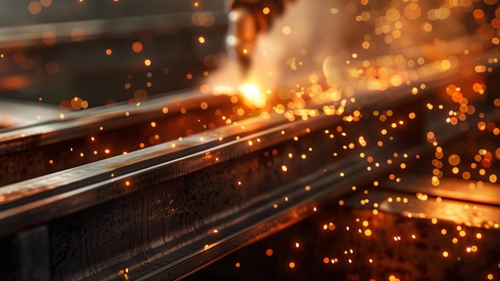

برش لیزر پروفیل و لوله
قوطی، لوله، نبشی و ناودانی؛ آهن، استیل و آلومینیوم
هایپرفب برش لیزر، سوراخکاری و آمادهسازی سرِ قوطی، لوله و پروفیل را از آهن، استیل و آلومینیوم، دقیق و با لبهی برش تمیز انجام میدهد؛ از اولین نمونه تا سفارش تیراژی.
- مقاطع: قوطی، لوله، نبشی، ناودانی و مقاطع خاص
- جنس: آهن، استیل و آلومینیوم
- سفارش: از نمونه و تیراژ اولیه تا تولید تیراژی

برش لیزر پروفیل و لوله یعنی بریدن قوطی، لوله و پروفیل به طول لازم و زدن سوراخ، شیار و فرم سرِ اتصال، همه با یک برنامه و در یک مرحله. هایپرفب در تهران این کار را روی قوطی، لولهی گرد، نبشی، ناودانی و مقاطع خاص از آهن، استیل و آلومینیوم انجام میدهد؛ از نمونه و تیراژ اولیهی کوچک تا سفارش تیراژی، با متریال خودتان یا متریالی که هایپرفب تأمین میکند. قیمت به مقطع، جنس، تعداد برش و سوراخ هر قطعه و تیراژ بستگی دارد؛ مشاوره: ۰۹۹۶۲۲۳۳۸۹۸.
- خدمت
- برش لیزر، سوراخکاری و آمادهسازی سرِ قوطی، لوله و پروفیل
- مقاطع
- قوطی مربع و مستطیل، لولهی گرد، نبشی، ناودانی و U، مقاطع بیضی و خاص
- جنس
- آهن، استیل و آلومینیوم
- تیراژ
- نمونه و تیراژ اولیهی کوچک، و سفارش تیراژی
- متریال
- از طرف شما، یا تأمین توسط هایپرفب
- سفارش
- تلفنی: ۰۹۹۶۲۲۳۳۸۹۸ · بله: @hyperfab_pro
- محل
- تهران
پروژهی واقعی: فریم مکانیزم از قوطی و ورق St37
فریم یک مکانیزم از قوطی و ورق St37، از طراحی تا جوش در هایپرفب: برش لیزر قوطی، برش لیزر و خم ورق، جوش آرگون TIG و مهرهپرچ؛ با ویدیوی واقعی هر مرحله.
داستان کامل این پروژه ←برش لیزر پروفیل و لوله چیست و روی چه مقاطعی انجام میشود؟
برش لیزر پروفیل و لوله (Tube & Profile Laser Cutting) همان برش لیزر است، اما بهجای ورق تخت روی مقاطع بلند انجام میشود. برنامهی برش از روی نقشهی قطعه ساخته میشود و برش به طول، سوراخها، شیارها و فرم سرها روی وجههای مختلف مقطع، پشت سر هم و بدون باز و بسته کردن دوبارهی قطعه زده میشود. نتیجه قطعهای است که آمادهی جوش یا مونتاژ است، نه شاخهای که هنوز باید اره، مته و سنگ بخورد.
در بازار به این مقاطع اسمهای مختلفی میدهند. قوطی، یعنی مقطع توخالی مربع یا مستطیل، خودش یکی از انواع پروفیل است. در کنار قوطی، لولهی گرد، پروفیلهای باز مثل نبشی، ناودانی و مقطع U، و مقاطع بیضی و خاص هم برش لیزر میخورند. هایپرفب این کار را روی آهن (فولاد کربنی معمولی)، استیل و آلومینیوم انجام میدهد.
گروه هایپرفب در برش لیزر پروفیل تجربهی زیادی دارد و روی چیزهایی تمرکز میکند که سرِ مونتاژ معلوم میشوند: دقت طول و جای سوراخها، لبهی برش تمیز و یکسان بودن قطعات یک سری. سفارش هم فقط تیراژی نیست؛ نمونه و تیراژ اولیهی کوچک پذیرفته میشود تا قطعه پیش از تولید سری در مونتاژ واقعی امتحان شود.
روی قوطی، لوله و پروفیل چه برشهایی زده میشود؟
برش به طول، سوراخ گرد و فرمدار، شیار و پنجره، برش دهانماهی (زیناسبی) سرِ لوله، برش فارسیبر و زبانه و شیار برای فریمهای جوشی؛ امکان هر کدام به مقطع و جنس بستگی دارد.
برش به طول
بریدن شاخه به طول دقیق با سرِ تمیز؛ قطعات یک سری هماندازه از کار درمیآیند و نیازی به اره و خطکشی نیست.
سوراخ گرد و فرمدار
سوراخ گرد، بیضی، مربعی یا هر شکل دیگر روی وجههای مقطع، با فاصلهی دقیق از سرِ قطعه. سوراخهای خیلی ریز نسبت به ضخامت دیواره پس از بررسی تأیید میشوند.
شیار و پنجره
شیار برای پیچ و تنظیم، پنجره برای عبور کابل یا سبکسازی، و برشهای تزئینی روی بدنهی قوطی و لوله.
برش دهانماهی سرِ لوله
فرمدادن سرِ لوله به شکل لولهی مقابل (برش زیناسبی)، تا دو لوله بیفاصله روی هم بنشینند و جوش یکنواخت شود. روی لولههای جدار ضخیم پس از بررسی نقشه.
برش فارسیبر
برش سرِ مایل (زاویهدار) برای گوشههای قاب و فریم؛ زاویهی قابلاجرا به مقطع بستگی دارد.
زبانه و شیار برای فریم
زبانه و شیارهایی که قطعات فریم را پیش از جوش در جای درست نگه میدارند؛ نیاز به فیکسچر کم میشود و ابعاد فریم دقیقتر درمیآید.
چرا برش لیزر بهجای اره، دریل و پانچ؟
همهی برشها و سوراخها در یک مرحله و با یک برنامه، بدون هزینهی قالب، با جای سوراخ دقیق نسبت به سرِ قطعه و قطعاتی یکسان در کل سری.
| موضوع | برش لیزر پروفیل | اره، دریل و پانچ |
|---|---|---|
| تعداد مراحل | برش به طول، سوراخ و شیار در یک مرحله | چند مرحله، با چند بار جابهجایی و اندازهگیری |
| ابزار و قالب | بدون قالب؛ شکل از روی نقشه برنامهریزی میشود | سوراخ فرمدار قالب یا ابزار مخصوص میخواهد |
| جای سوراخها | دقیق نسبت به سرِ قطعه و نسبت به هم | وابسته به خطکشی و دقت اپراتور |
| لبهی برش | لبهی تمیز با کار تکمیلی کم | معمولاً پلیسهگیری و سنگکاری میخواهد |
| تکرارپذیری | قطعات یک سری مثل هم | از قطعهای به قطعهی دیگر فرق میکند |
| تغییر طرح | اصلاح نقشه و برنامه | ابزار یا شابلون تازه |
نقشهی قطعهی پروفیلی را چطور آماده کنیم؟
فایل سهبعدی STEP یا IGES بهترین ورودی است؛ مقطع، جنس و تعداد را بنویسید، سوراخها را از شعاع گوشه دور نگه دارید و درز جوش قوطی و لوله را در نظر بگیرید.
فایل سهبعدی: فایل STEP یا IGES قطعه بهترین ورودی است. اگر ندارید، نقشهی دوبعدی، DXF یا PDF هم پذیرفته میشود، به شرطی که مقطع و ابعادش روشن نوشته شده باشد.
مقطع، جنس و تعداد: ابعاد مقطع و ضخامت دیواره، جنس (آهن، استیل یا آلومینیوم) و تعداد هر قطعه را کنار نقشه بنویسید.
فاصله از شعاع گوشه: گوشهی قوطی گرد است و سوراخی که روی این شعاع بیفتد شکلش عوض میشود. لبهی سوراخها و شیارها را روی بخش تخت وجه نگه دارید.
لقی زبانه و شیار: در طراحی زبانه و شیار کمی لقی بگذارید تا قطعات بدون ضربه و فشار در هم بنشینند.
درز جوش: قوطی و لولهی درزدار، در داخل یک خط جوش دارند. اگر سوراخ یا شیاری نباید روی درز بیفتد، در نقشه بنویسید.
وجه نمایان: اگر وجهی از قطعه در محصول نهایی دیده میشود، آن را مشخص کنید تا در جانمایی برشها و جابهجایی قطعه رعایت شود.
رزوه روی ورق و دیوارهی نازک: ورق یا دیوارهی نازک ضخامت کافی برای رزوهی قلاویزی محکم ندارد؛ بهجای آن، سوراخ مهرهپرچ (ریوتنات) بریده میشود تا مهرهپرچ رزوهی محکم برای پیچ بدهد (نمونهکار فریم مکانیزم St37).
جوش و رنگ فریم هم در هایپرفب انجام میشود؟
بله. قطعهی پروفیلی معمولاً بخشی از یک فریم، شاسی یا سازه است. در هایپرفب میتوانید بعد از برش لیزر، جوشکاری TIG و MIG و ساخت فریم و سپس رنگ کورهای یا آبکاری و آندایز را هم بسپارید. قطعات ورقی همان سازه، مثل صفحهی پایه، براکت و لچکی، از راه برش لیزر ورق و خمکاری ورق در hyperfab.ir آنلاین سفارش داده میشوند.
مزیت این زنجیره یک طرف مسئول است. اگر زبانه و شیار برای جوش طراحی شده، هایپرفب که مسئول برش بوده، مسئول جوش فریم و کنترل ابعاد نهایی هم هست. قطعه بین چند کارگاه دستبهدست نمیشود و اگر جایی ایراد داشته باشد، معلوم است چه کسی باید آن را درست کند.
سفارش برش لیزر پروفیل و لوله چه مراحلی دارد؟
پنج مرحله: ارسال نقشه، بررسی مهندسی و قیمت، نمونه یا تیراژ اولیه، تولید سری، و کنترل و تحویل.
ارسال نقشه
فایل STEP یا نقشهی قطعه را در بله بفرستید یا تماس بگیرید و مقطع، جنس و تعداد را بگویید.
بررسی مهندسی و قیمت
نقشه از نظر امکان برش بررسی میشود و قیمت بر اساس مقطع، جنس، تعداد برش و سوراخ و تیراژ اعلام میشود؛ متریال با شما یا با هایپرفب.
نمونه یا تیراژ اولیه
چند قطعهی اول برش میخورد تا در مونتاژ یا جوش واقعی امتحان و تأیید شود.
تولید سری
پس از تأیید، کل سفارش با همان برنامه برش میخورد تا قطعات یکسان باشند.
کنترل و تحویل
قطعات کنترل و تحویل میشوند، یا برای جوش و رنگ به مرحلهی بعد میروند.
برش لیزر پروفیل و لوله در تصویر

سؤالات متداول
برش لیزر روی چه مقاطع و جنسهایی انجام میشود؟
سفارش نمونه یا تعداد کم را هم قبول میکنید؟
میتوانم قوطی و لوله را خودم بیاورم؟
برای برش لیزر لوله و پروفیل چه فایلی لازم است؟
حداکثر ابعاد، ضخامت دیواره و دقت برش چقدر است؟
جوشکاری و رنگ فریم را هم انجام میدهید؟
برش لیزر پروفیل با برش لیزر ورق چه فرقی دارد؟
برش لیزر پروفیل و لوله هایپرفب کجاست؟
نقشهی قطعهی پروفیلی خود را بفرستید
فایل STEP یا نقشه را با مقطع، جنس و تعداد بفرستید یا تماس بگیرید. کارشناس پروژههای صنعتی هایپرفب تلفنی پاسخگوی شماست.